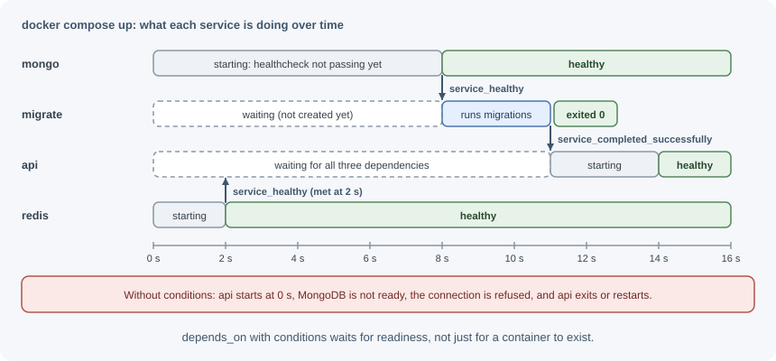

Docker Compose for Development¶
Docker Compose describes a multi-container application in one YAML file
and runs it with one command. Instead of starting MongoDB, Redis, and the
API by hand with long docker run lines, you declare the services, their
images or build instructions, ports, environment, volumes, health checks,
and dependencies, and docker compose up creates the network, volumes,
and containers in the right order.
This lesson covers the structure of a Compose file, every key the TaskFlow
stack uses, how service names become hostnames, how to start services
only when their dependencies are healthy, profiles for optional tools,
override files for personal and environment-specific settings, docker
compose watch for live code sync, and the commands you will use every
day.
Why it matters¶
A new developer should be able to clone the repository and run the whole system in minutes, with the same database and cache versions that production uses. Without Compose, onboarding means a page of installation steps, everyone's local MongoDB is a different version, and "start Redis first" lives only in someone's memory.
Compose turns that knowledge into a reviewed file in the repository. It also gives integration tests and CI a reproducible environment, and it is a reasonable way to run small production deployments on a single server.
Real-world usage¶
- The Twelve-Factor App. The dev/prod parity factor argues that developers should use the same type and version of backing services (database, queue, cache) locally as in production, and names lightweight tools such as Docker as the way to make that practical.
- Docker. The documentation on
controlling startup order
explains that Compose starts containers in dependency order but only
waits for readiness when you use health checks with
condition: service_healthy, the pattern this page uses for MongoDB. - The Compose Specification. The open
Compose Specification
defines the file format that Docker Compose v2 implements. It made the
old top-level
versionfield obsolete, which is why modern files start directly withservices:. - Docker. The Compose Watch
guide shows
develop.watchrules that sync source files into a running container and rebuild it when dependency manifests change, replacing slow bind mounts on macOS and Windows for many projects.
Popular tools and providers: Docker Compose v2 (docker compose),
Podman Compose, Docker Desktop, Rancher Desktop, Testcontainers (for
containers started from test code), Tilt, and Dev Containers.
How it works¶
The Compose file¶
Compose looks for compose.yaml (preferred), compose.yml, or the older
docker-compose.yaml in the current directory. The main top-level keys:
| Key | Purpose |
|---|---|
name |
Project name; defaults to the directory name |
services |
The containers to run, one entry per service |
volumes |
Named volumes the services mount |
networks |
Extra networks; one default network is created automatically |
configs, secrets |
Files mounted into services |
include |
Pulls in other Compose files as sub-projects |
There is no version: key in current files. Compose v2 ignores it and
prints a warning that it is obsolete.
Compose names everything after the project: containers become
taskflow-api-1, the default network taskflow_default, and a volume
called mongo-data becomes taskflow_mongo-data. Two checkouts of the
same repository in folders with the same name share these resources, so
set name: or use -p when that matters.
Services: build or image¶
Each service either uses an existing image (image: mongo:8.0) or builds
one (build:). A service can have both: Compose builds the image and tags
it with the image name.
| Key | Example | Notes |
|---|---|---|
image |
mongo:8.0 |
Pin at least a major version; never rely on latest |
build.context |
. |
The build context, as with docker build |
build.target |
build |
Stop at a Dockerfile stage (a stage with dev dependencies) |
command |
npm run dev |
Overrides the image's CMD |
ports |
"3000:3000" |
HOST:CONTAINER; quote them so YAML does not misread them |
environment |
MONGODB_URI: mongodb://mongo:27017/taskflow |
Variables set in the container |
env_file |
.env.local |
File of NAME=value lines loaded into the container |
volumes |
mongo-data:/data/db |
Named volume or bind mount |
depends_on |
mongo: {condition: service_healthy} |
Start order and readiness |
healthcheck |
test: ["CMD", "redis-cli", "ping"] |
Overrides or adds the image's health check |
restart |
unless-stopped |
Restart policy |
profiles |
["tools"] |
Start only when the profile is enabled |
Environment variables: two different mechanisms¶
Compose uses environment variables in two separate ways, and mixing them up is a classic source of confusion:
- Interpolation in the Compose file.
${MONGO_TAG:-8.0}incompose.yamlis replaced when Compose reads the file, using your shell environment and the project's.envfile.${NAME:?message}stops with an error ifNAMEis unset. - Variables inside the container.
environment:andenv_file:decide what the process sees inprocess.env. The project.envfile is not passed into containers unless you list it inenv_file.
When both set the same variable, environment: wins over env_file:.
docker compose config prints the fully resolved file, which is the
quickest way to see what Compose actually did. Precedence rules in more
depth are in
env files and precedence.
Networks and service-name DNS¶
Compose creates one user-defined bridge network per project and attaches
every service to it. Docker's embedded DNS server resolves each service
name to the container's IP address on that network, so the API connects
to mongodb://mongo:27017, not to localhost. Inside a container,
localhost means the container itself.
![Diagram: on your machine, a browser or curl calls localhost:3000, published to the api service; ./src is synced into api by compose watch; a browser on localhost:8081 reaches the optional mongo-express service in the tools profile; inside the taskflow_default network, where service names resolve through Docker DNS, api connects to redis at redis://redis:6379 and to mongo at mongodb://mongo:27017, mongo-express connects to mongo, and mongo stores its data in the named volume mongo-data at /data/db, which docker compose down keeps and docker compose down -v deletes.](../compose-stack-topology.svg)
Two consequences:
- Services talk to each other on the container port (27017), whatever host port you publish. Publishing a port is only needed for access from your machine.
- A service that is not published at all (Redis above) is reachable only from inside the network, which is a sensible default for databases.
Startup order and health conditions¶
depends_on controls the order in which containers start. In its short
form (depends_on: [mongo]) it only waits for the mongo container to be
created and started, not for MongoDB to accept connections. MongoDB
needs a few seconds to initialize, so an API that connects at startup can
fail with ECONNREFUSED or a server-selection timeout.
The long form adds a condition:
| Condition | Waits until |
|---|---|
service_started |
The dependency's container has started (the default) |
service_healthy |
The dependency's health check reports healthy |
service_completed_successfully |
The dependency ran to completion and exited with code 0 |

service_healthy requires a healthcheck on the dependency. Adding
restart: true under a dependency also restarts the dependent service
when that dependency is restarted by a Compose command. Health conditions
make startup reliable, but the application should still retry its
connections: in production nothing waits for the database for you.
Health checks in Compose¶
A healthcheck block has the same fields as the Dockerfile instruction,
written in YAML:
healthcheck:
test: ["CMD", "mongosh", "--quiet", "--eval", "db.adminCommand('ping').ok"]
interval: 5s
timeout: 5s
retries: 10
start_period: 10s
test in ["CMD", ...] form runs the program directly; ["CMD-SHELL",
"..."] runs it through /bin/sh. The command must exist in the image:
the official mongo images ship mongosh, the redis images ship
redis-cli, and Node images can use node -e with fetch.
Profiles¶
Services with profiles: start only when one of their profiles is
enabled, with --profile <name> or the COMPOSE_PROFILES variable.
Services without profiles always start. This keeps optional tools (an
admin UI, a mail catcher, a load generator) in the same file without
running them for everyone.
Override files¶
Compose automatically merges compose.override.yaml on top of
compose.yaml when it exists. With -f, you choose the files and their
order explicitly: docker compose -f compose.yaml -f compose.ci.yaml up.
Merge rules:
- Single-value keys (
image,command,restart) are replaced by the later file. - Multi-value keys (
ports,expose,dns) are combined. environment,labels, andvolumesare merged by key or by container path, with the later file winning.
Common uses: a git-ignored compose.override.yaml for personal settings,
a compose.ci.yaml that runs tests, and a production file that removes
bind mounts and sets restart policies.
docker compose watch¶
The develop.watch section tells Compose what to do when files on the
host change:
| Action | What happens | Use it for |
|---|---|---|
sync |
Copies changed files into the running container | Source code with a watcher inside (tsx, nodemon, Vite) |
rebuild |
Rebuilds the image and recreates the container | package.json, package-lock.json, the Dockerfile |
sync+restart |
Syncs files, then restarts the container | Config files read only at startup |
docker compose watch (or docker compose up --watch) starts the stack
and the watcher. Compared with bind-mounting the whole project, syncing
avoids the slow cross-VM file access of Docker Desktop on macOS and
Windows, and it never mounts the host's node_modules (built for the
host OS) over the container's.
When to use and when not to use¶
| Use Compose for | Prefer something else for |
|---|---|
| Local development stacks with databases and caches | Multi-host production clusters (Kubernetes, ECS) |
| Integration tests in CI | Unit tests that need no services |
| Demo environments and reproducible bug reports | Autoscaling and zero-downtime rolling deploys |
| Small production deployments on one VM | Highly available databases (use managed services) |
| Trying out a new tool next to your app | Containers created per test case (Testcontainers) |
Compose on a single server is a legitimate production choice for small
internal tools: add restart: unless-stopped, log rotation, backups, and
no bind mounts of source code. It cannot spread containers across
machines, fail over when the host dies, or roll out new versions without
a brief gap, which is where Kubernetes or a managed
container platform takes over.
Practical examples¶
The full TaskFlow stack¶
# compose.yaml: TaskFlow local development stack
name: taskflow
services:
api:
build:
context: .
target: build # Dockerfile stage with dev dependencies
command: npm run dev # package.json: "dev": "tsx watch src/server.ts"
ports:
- "3000:3000"
environment:
NODE_ENV: development
PORT: "3000"
MONGODB_URI: mongodb://mongo:27017/taskflow
REDIS_URL: redis://redis:6379
env_file:
- path: .env.local # personal overrides, git-ignored
required: false
depends_on:
mongo:
condition: service_healthy
redis:
condition: service_healthy
migrate:
condition: service_completed_successfully
healthcheck:
test: ["CMD", "node", "-e", "fetch('http://127.0.0.1:3000/healthz').then(r => process.exit(r.ok ? 0 : 1)).catch(() => process.exit(1))"]
interval: 10s
timeout: 3s
retries: 3
start_period: 20s
develop:
watch:
- action: sync
path: ./src
target: /app/src
- action: rebuild
path: package-lock.json
migrate:
build:
context: .
target: build
command: npm run migrate # idempotent: safe to run on every "up"
environment:
MONGODB_URI: mongodb://mongo:27017/taskflow
depends_on:
mongo:
condition: service_healthy
mongo:
image: mongo:8.0
volumes:
- mongo-data:/data/db
healthcheck:
test: ["CMD", "mongosh", "--quiet", "--eval", "db.adminCommand('ping').ok"]
interval: 5s
timeout: 5s
retries: 10
start_period: 10s
redis:
image: redis:7-alpine
healthcheck:
test: ["CMD", "redis-cli", "ping"]
interval: 5s
timeout: 3s
retries: 5
mongo-express:
image: mongo-express:1.0
profiles: ["tools"]
ports:
- "127.0.0.1:8081:8081"
environment:
ME_CONFIG_MONGODB_URL: mongodb://mongo:27017/
ME_CONFIG_BASICAUTH_USERNAME: admin
ME_CONFIG_BASICAUTH_PASSWORD: ${MONGO_EXPRESS_PASSWORD:?set MONGO_EXPRESS_PASSWORD in .env}
depends_on:
mongo:
condition: service_healthy
volumes:
mongo-data:
What each part does:
apibuilds thebuildstage of the Dockerfile from writing production Dockerfiles, which has dev dependencies, and runs a watcher. It reaches MongoDB and Redis by service name and starts only after both are healthy and the migrations have finished.migrateis a one-off task.service_completed_successfullymeans a failing migration stops the API from starting, which is exactly what you want.mongokeeps its data in the named volumemongo-data, sodocker compose downandupkeep your local data. It publishes no port; tools on your machine use the override file below.redisis reachable only inside the project network.mongo-expressstarts only with--profile tools, binds to127.0.0.1so other machines on your network cannot reach it, and refuses to start without a password.
The local MongoDB here has no authentication, which is acceptable only because nothing outside this machine can reach it. Never copy this service definition to a server.
Project .env for interpolation¶
# .env (read by Compose for ${...} in compose.yaml; not passed to containers)
MONGO_EXPRESS_PASSWORD=<choose-a-local-password>
COMPOSE_PROFILES=
A personal override file¶
# compose.override.yaml: local-only tweaks (listed in .gitignore)
services:
api:
environment:
LOG_LEVEL: debug
mongo:
ports:
- "127.0.0.1:27017:27017" # for MongoDB Compass or mongosh on this machine
environment is merged by key and ports are added, so this file only
contributes the debug log level and the published database port.
Everyday commands¶
docker compose up -d # create and start everything in the background
docker compose up -d --build # rebuild images first
docker compose watch # start and sync ./src on every save
docker compose --profile tools up -d # also start mongo-express
docker compose ps # services, state, health, ports
docker compose logs -f api # follow one service's logs
docker compose exec api sh # shell in the running api container
docker compose run --rm api npm test # one-off container with the api's settings
docker compose exec mongo mongosh taskflow # database shell
docker compose restart api # restart one service
docker compose config # print the fully resolved configuration
docker compose down # stop and remove containers and the network
docker compose down -v # ...and delete named volumes (local data!)
Running integration tests in CI¶
# compose.ci.yaml: used as docker compose -f compose.yaml -f compose.ci.yaml ...
services:
api:
command: npm run test:integration
develop: !reset {}
docker compose -f compose.yaml -f compose.ci.yaml up -d --wait mongo redis
docker compose -f compose.yaml -f compose.ci.yaml run --rm api
docker compose -f compose.yaml -f compose.ci.yaml down -v
--wait returns only when the listed services are running and healthy.
The !reset tag removes the develop section inherited from the base
file. Tests then run against real MongoDB and Redis of the same versions
as development.
Best practices¶
- Name the file
compose.yaml, leave outversion:, and setname:. - Pin image versions for every service, matching production's versions.
- Add health checks to databases and caches and use
service_healthy; still make the application retry connections. - Connect services by service name; publish only the ports you use from
the host, bound to
127.0.0.1. - Keep data in named volumes and remember that
down -vdeletes them. - Keep secrets in a git-ignored
.envorenv_file, never incompose.yaml. - Put optional tools behind profiles and personal tweaks in an ignored override file.
- Prefer
develop.watchover bind-mounting the whole project, especially on macOS and Windows. - Check what Compose will do with
docker compose config.
In production¶
- The API crashes on
docker compose upwithECONNREFUSED. Detect:docker compose logs apishows a MongoDB connection error in the first seconds, then a restart. Cause:depends_onwithout a condition waits only for the container to start, not for MongoDB to be ready. Fix: add a health check tomongo, usecondition: service_healthy, and add connection retries in the app. dependency failed to start: container taskflow-mongo-1 is unhealthy. Detect:docker inspect --format '{{json .State.Health}}' taskflow-mongo-1shows the check output, such asexecutable file not found. Cause: the health check calls a tool missing from the image (the legacymongoshell is not in current MongoDB images), or the timeout is too short for the first start. Fix: usemongosh, and raisestart_periodandretries.- All local data disappeared.
Detect: collections are empty after a restart, and
docker volume lsno longer liststaskflow_mongo-data. Cause: someone randocker compose down -v, or the project name changed so a new, empty volume was created. Fix: setname:explicitly, avoid-vunless you mean it, and keep a seed script for local data. Bind for 0.0.0.0:3000 failed: port is already allocated. Detect:docker compose upfails for one service. Cause: another container or a local process already uses the host port. Fix: stop the other process (docker psshows containers), or change the host side of the mapping ("3001:3000"); the container port stays the same.- Code changes do not show up in the running API.
Detect: the response is unchanged after saving a file. Cause: the
stack was started with
upinstead ofwatch, the watch path does not match the folder, or the process inside does not reload. Fix: usedocker compose watch, checkpathandtarget, and run a watcher (tsx watch,node --watch) as the command. - A variable is set in
.envbutprocess.envdoes not have it. Detect:docker compose exec api envlacks the variable. Cause: the project.envfile is only used for interpolation in the Compose file. Fix: reference it inenvironment:(FOO: ${FOO}) or list the file underenv_file:.
Important terminology¶
- Project: All resources Compose manages for one Compose file, named
by
name:or the directory. - Service: A named container definition that Compose runs as one or more containers.
- Default network: The bridge network Compose creates per project; service names resolve on it.
- Named volume: Docker-managed storage that survives container recreation.
- Health check: A command whose exit status marks a container
healthyorunhealthy. - Dependency condition:
service_started,service_healthy, orservice_completed_successfullyindepends_on. - Profile: A label that makes a service start only on request.
- Override file: A Compose file merged on top of another, such as
compose.override.yaml. - Interpolation: Substituting
${VAR}in the Compose file from the shell and.env. - Compose Watch: Rules in
develop.watchthat sync files or rebuild services when the host files change.
Common mistakes and misconceptions¶
- Using
localhostto reach another service; inside a container it is the container itself. - Assuming
depends_onwaits until a database is ready. - Expecting the project
.envfile to appear in containers. - Writing
version: "3.8"and believing it changes behaviour; it is ignored. - Publishing database ports on
0.0.0.0, exposing them to the whole network. - Bind-mounting the host's
node_modulesinto a Linux container. - Treating
docker compose down -vas a harmless cleanup. - Using the legacy
docker-compose(v1) binary; the current command isdocker compose.
Revision questions¶
- Why does the API use
mongodb://mongo:27017instead ofmongodb://localhost:27017? - What is the difference between
depends_on: [mongo]anddepends_on: {mongo: {condition: service_healthy}}? - In the timeline above, MongoDB becomes healthy at 8 seconds and the migration takes 3 seconds. If MongoDB's health check interval were 10 seconds instead of 5, roughly when could the API start, and why?
- Where do
${MONGO_EXPRESS_PASSWORD}andenv_filevalues each come from, and which one does the container see? - How would you run mongo-express only when you need it?
- What happens to the
portslist and thecommandwhen an override file sets both? - Why can
docker compose watchbe faster than a bind mount on macOS? - When is Compose a reasonable production tool, and what does it lack compared with Kubernetes?